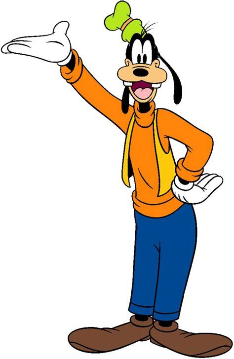

|  | 回到首页高飞（Goofy，有“笨手笨脚”的意思）是迪士尼经典动画人物之一，首次出现于1932年5月25日发行的米老鼠卡通片Mickey's Revue，在片中扮演观众角色[1]。迪士尼故事家、音乐人，做过马戏团小丑的品托·考维格（Pinto Colvig）为高飞“献声”，在这部片子里，高飞和其他的观众一起后排看米奇的演出，而他那沙哑的笑声，给华特迪士尼和他的员工留下了深刻的印象，而这个人物形象接下来开始出现在其他的动画短片。而不久，高飞就开始成为Mickey,Minnie,Pluto,Clarabelle Cow,and Horace Horsecollar 这些人物当中的一部分。在当时报纸连载的连环画中，这个人物的名字是 Dippy Dawg。 |